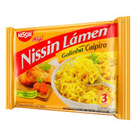

RECEITA DE MIOJO

Ingredientes:
Um pacote de miojo.
250 ml de água.
Temperos...(a gosto)
Modo de preparo:
Ferver a água
Acrescentar o miojo na água fervente
Aguardar 3 minutos
Temperar
Servir
© Vítor Linux/Microsoft
Home